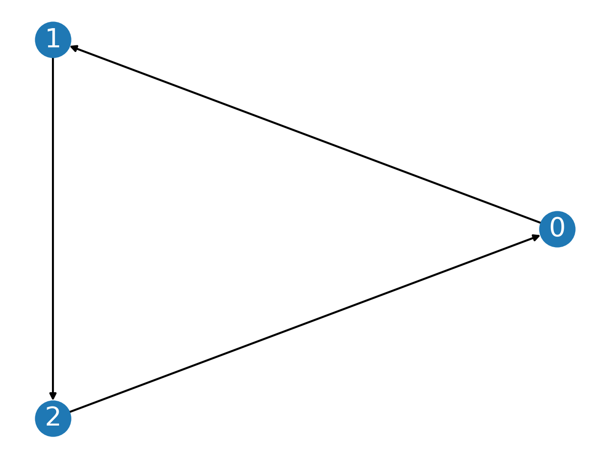
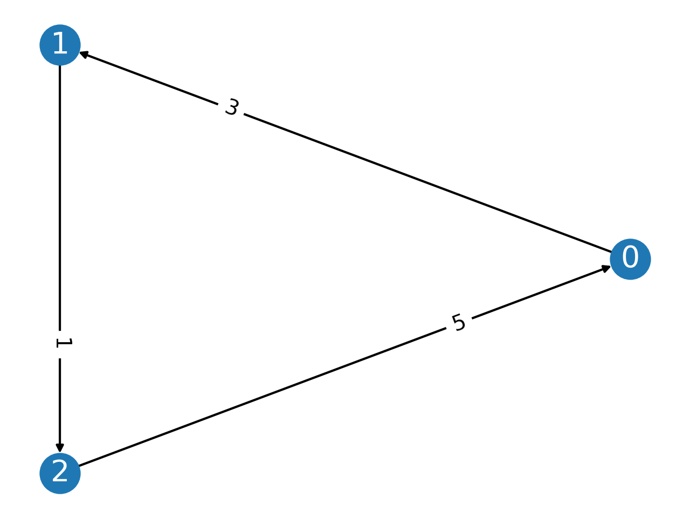

(Weighted) Majority Graphs#
MajorityGraph Class#
- class pref_voting.weighted_majority_graphs.MajorityGraph(candidates, edges, cmap=None)[source]#
An majority graph is an asymmetric directed graph. The nodes are the candidates and an edge from candidate \(c\) to \(d\) means that \(c\) is majority preferred to \(d\).
- Parameters
candidates (list[int] or list[str]) – List of the candidates. To be used as nodes in the majority graph.
edges (list) – List of the pairs of candidates describing the edges in the majority graph. If \((c,d)\) is in the list of edges, then there is an edge from \(c\) to \(d\).
cmap (dict[int: str], optional) – Dictionary mapping candidates to candidate names (strings). If not provied, each candidate name is mapped to itself.
- Example
The following code creates a majority graph in which 0 is majority preferred to 1, 1 is majority preferred to 2, and 2 is majority preferred to 0:
mg = MajorityGraph([0, 1, 2], [(0,1), (1,2), (2,0)])
Warning
Currently, there is no check to that the edges are asymteric. It is assumed that the user provides an appropriate set of edges.
- candidates#
The list of candidates.
- condorcet_loser(curr_cands=None)[source]#
Returns the Condorcet loser in the profile restricted to
curr_candsif one exists, otherwise return None.A candidate \(c\) is a Condorcet loser if every other candidate is majority preferred to \(c\).
- condorcet_winner(curr_cands=None)[source]#
Returns the Condorcet winner in the profile restricted to
curr_candsif one exists, otherwise return None.The Condorcet winner is the candidate that is majority preferred to every other candidate.
- copeland_scores(curr_cands=None, scores=(1, 0, - 1))[source]#
The Copeland scores in the profile restricted to the candidates in
curr_cands.The Copeland score for candidate \(c\) is calculated as follows: \(c\) receives
scores[0]points for every candidate that \(c\) is majority preferred to,scores[1]points for every candidate that is tied with \(c\), andscores[2]points for every candidate that is majority preferred to \(c\). The defaultscoresis(1, 0, -1).- Parameters
curr_cands (list[int], optional) – restrict attention to candidates in this list. Defaults to all candidates in the profile if not provided.
scores (tuple[int], optional) – the scores used to calculate the Copeland score of a candidate \(c\):
scores[0]is for the candidates that \(c\) is majority preferred to;scores[1]is the number of candidates tied with \(c\); andscores[2]is the number of candidate majority preferred to \(c\). The default value isscores = (1, 0, -1)
- Returns
a dictionary associating each candidate in
curr_candswith its Copeland score.
- cycles()[source]#
Returns True if the margin graph has a cycle.
This uses the networkx method
networkx.find_cycleto find the cycles inself.mg.- Example
from pref_voting.weighted_majority_graphs import MajorityGraph mg = MajorityGraph([0,1,2], [(0,1), (1,2), (0,2)]) print(f"The cycles in the majority graph are {mg.cycles()}") mg = MajorityGraph([0,1,2], [(0,1), (1,2), (2,0)]) print(f"The cycles in the majority graph are {mg.cycles()}") mg = MajorityGraph([0,1,2,3], [(0,1), (3,0), (1,2), (3,1), (2,0), (3,2)]) print(f"The cycles in the majority graph are {mg.cycles()}")
The cycles in the majority graph are [] The cycles in the majority graph are [[0, 1, 2]] The cycles in the majority graph are [[0, 1, 2]]
- display(cmap=None, curr_cands=None)[source]#
Display a majority graph (restricted to
curr_cands) using networkx.draw.- Parameters
cmap (dict[int,str], optional) – the candidate map to use (overrides the cmap associated with this majority graph)
curr_cands (list[int], optional) – list of candidates
- Return type
None
- Example
from pref_voting.weighted_majority_graphs import MajorityGraph mg = MajorityGraph([0,1,2], [(0,1), (1,2), (2,0)]) mg.display()
- dominates(cand, curr_cands=None)[source]#
Returns the list of candidates that
candis majority preferred to in the majority graph restricted tocurr_cands.
- dominators(cand, curr_cands=None)[source]#
Returns the list of candidates that are majority preferred to
candin the majority graph restricted tocurr_cands.
- property edges#
Returns a list of the edges in the majority graph.
- classmethod from_profile(profile, cmap=None)[source]#
Generates a majority graph from a
Profile.- Parameters
profile (Profile) – the profile
cmap (dict[int,str], optional) – the candidate map to use (overrides the cmap associated with this majority graph)
- Return type
str
- Example
from pref_voting.profiles import Profile from pref_voting.weighted_majority_graphs import MajorityGraph prof = Profile([[0,1,2], [1,2,0], [2,0,1]]) mg = MajorityGraph.from_profile(prof) print(mg.edges) # it is better to use the Profile method mg = prof.majority_graph() print(mg.edges)
[(0, 1), (1, 2), (2, 0)] [(0, 1), (1, 2), (2, 0)]
- property is_tournament#
Returns True if the majority graph is a tournament (there is an edge between any two nodes).
- maj_matrix#
A networkx DiGraph object representing the majority graph.
- mg#
A networkx DiGraph object representing the majority graph.
- remove_candidates(cands_to_ignore)[source]#
Remove all candidates from
cands_to_ignorefrom the Majority Graph.- Parameters
cands_to_ignore (list[int]) – list of candidates to remove from the profile
- Returns
a majority graph with candidates from
cands_to_ignoreremoved and a dictionary mapping the candidates from the new profile to the original candidate names.- Example
from pref_voting.weighted_majority_graphs import MajorityGraph mg = MajorityGraph([0, 1, 2], [(0, 1), (1, 2), (2, 0)]) print(f"Candidates: {mg.candidates}") print(f"Edges: {mg.edges}") mg_new = mg.remove_candidates([1]) print(f"Candidates: {mg_new.candidates}") print(f"Edges: {mg_new.edges}")
Candidates: [0, 1, 2] Edges: [(0, 1), (1, 2), (2, 0)] Candidates: [0, 2] Edges: [(2, 0)]
- to_latex(cmap=None, new_cand=None)[source]#
Outputs TikZ code for displaying the majority graph.
- Parameters
cmap (dict[int,str], optional) – the candidate map to use (overrides the cmap associated with this majority graph)
new_cand (int) – the candidate that is displayed on the far right, only used for displaying 5 candidates.
- Return type
str
Warning
This works best for 3, 4 or 5 candidates. It will produce the code for more than 5 outputs, but the positioning of the nodes may need to be modified.
- Example
from pref_voting.weighted_majority_graphs import MajorityGraph mg = MajorityGraph([0,1,2], [(0,1), (1,2), (2,0)]) print(mg.to_latex()) print(mg.to_latex(cmap = {0:"a", 1:"b", 2:"c"}))
\begin{tikzpicture} \node[circle,draw,minimum width=0.25in] at (0,0) (a) {$0$}; \node[circle,draw,minimum width=0.25in] at (3,0) (c) {$2$}; \node[circle,draw,minimum width=0.25in] at (1.5,1.5) (b) {$1$}; \path[->,draw,thick] (a) to (b); \path[->,draw,thick] (b) to (c); \path[->,draw,thick] (c) to (a); \end{tikzpicture} \begin{tikzpicture} \node[circle,draw,minimum width=0.25in] at (0,0) (a) {$a$}; \node[circle,draw,minimum width=0.25in] at (3,0) (c) {$c$}; \node[circle,draw,minimum width=0.25in] at (1.5,1.5) (b) {$b$}; \path[->,draw,thick] (a) to (b); \path[->,draw,thick] (b) to (c); \path[->,draw,thick] (c) to (a); \end{tikzpicture}
- weak_condorcet_winner(curr_cands=None)[source]#
Returns a list of the weak Condorcet winners in the profile restricted to
curr_cands(which may be empty).A candidate \(c\) is a weak Condorcet winner if there is no other candidate that is majority preferred to \(c\).
Note
While the Condorcet winner is unique if it exists, there may be multiple weak Condorcet winners.
{kind=link}
MarginGraph Class#
- class pref_voting.weighted_majority_graphs.MarginGraph(candidates, w_edges, cmap=None)[source]#
Bases:
pref_voting.weighted_majority_graphs.MajorityGraphA margin graph is a weighted asymmetric directed graph. The nodes are the candidates and an edge from candidate \(c\) to \(d\) with weight \(w\) means that the margin of \(c\) over \(d\) is \(w\).
- Parameters
candidates (list[int] or list[str]) – List of the candidates. To be used as nodes in the majority graph.
w_edges (list) – List of the pairs of candidates describing the edges in the majority graph. If \((c,d)\) is in the list of edges, then there is an edge from \(c\) to \(d\).
cmap (dict[int: str], optional) – Dictionary mapping candidates to candidate names (strings). If not provied, each candidate name is mapped to itself.
- Example
The following code creates a margin graph in which 0 is majority preferred to 1 by a margin of 1, 1 is majority preferred to 2 by a margin of 3, and 2 is majority preferred to 0 by a margin of 5:
mg = MarginGraph([0, 1, 2], [(0,1,1), (1,2,3), (2,0,5)])
Warning
Currently, there is no check to that the edges are asymteric. It is assumed that the user provides an appropriate set of edges with weights.
- add(edata)[source]#
Return a MarginGraph in which the new margin of candidate \(a\) over \(b\) is the sum of the existing margin of \(a\) over \(b\) with with the margin \(a\) over \(b\) in
edata.
- display(curr_cands=None, cmap=None)[source]#
Display a margin graph (restricted to
curr_cands) using networkx.draw.- Parameters
cmap (dict[int,str], optional) – the candidate map to use (overrides the cmap associated with this majority graph)
curr_cands (list[int], optional) – list of candidates
- Return type
None
- Example
from pref_voting.weighted_majority_graphs import MarginGraph mg = MarginGraph([0,1,2], [(0,1,3), (1,2,1), (2,0,5)]) mg.display()
- display_with_defeat(defeat, curr_cands=None, show_undefeated=True, cmap=None)[source]#
Display the margin graph with any edges that are
defeatedges highlighted in blue.- Parameters
defeat (networkx.DiGraph) – The defeat relation represented as a networkx object.
curr_cands (List[int], optional) – If set, then find the winners for the profile restricted to the candidates in
curr_candsshow_undfeated (bool, optional) – If true, color the undefeated candidates blue and the other candidates red.
cmap (dict, optional) – The cmap used to map candidates to candidate names
- property edges#
Returns a list of the weighted edges in the margin graph.
- classmethod from_profile(profile, cmap=None)[source]#
Generates a majority graph from a
Profile.- Parameters
profile (Profile) – the profile
cmap (dict[int,str], optional) – the candidate map to use (overrides the cmap associated with this majority graph)
- Return type
str
- Example
from pref_voting.profiles import Profile from pref_voting.weighted_majority_graphs import MarginGraph prof = Profile([[0,1,2], [1,2,0], [2,0,1]], [2, 1, 2]) mg = MarginGraph.from_profile(prof) print(mg.edges) print(mg.m_matrix) # it is better to use the Profile method mg = prof.margin_graph() print(mg.edges) print(mg.m_matrix)
[(0, 1, 3), (1, 2, 1), (2, 0, 1)] [[0, 3, -1], [-3, 0, 1], [1, -1, 0]] [(0, 1, 3), (1, 2, 1), (2, 0, 1)] [[0, 3, -1], [-3, 0, 1], [1, -1, 0]]
- is_uniquely_weighted()[source]#
Returns True if all the margins are unique and there is no 0 margin.
- m_matrix#
The margin matrix, where the \((i, j)\)-entry is the number of voters that rank candidate with index \(i\) above the candidate with index \(j\) minus the number of voters that rank candidate with index \(j\) above the candidate with index \(i\).
- normalize_ordered_weights()[source]#
Returns a MarginGraph with the same order of the edges, except that the weights are 2, 4, 6,…
Important
This function returns a margin graph that has the same ordering of the edges, but the edges may have different weights. Qualitative margin graph invariant voting methods will identify the same winning sets for both graphs.
- remove_candidates(cands_to_ignore)[source]#
Remove all candidates from
cands_to_ignorefrom the Majority Graph.- Parameters
cands_to_ignore (list[int]) – list of candidates to remove from the profile
- Returns
a majority graph with candidates from
cands_to_ignoreremoved and a dictionary mapping the candidates from the new profile to the original candidate names.- Example
from pref_voting.weighted_majority_graphs import MarginGraph mg = MarginGraph([0, 1, 2], [(0, 1, 11), (1, 2, 13), (2, 0, 5)]) print(f"Candidates: {mg.candidates}") print(f"Edges: {mg.edges}") mg_new = mg.remove_candidates([1]) print(f"Candidates: {mg_new.candidates}") print(f"Edges: {mg_new.edges}")
Candidates: [0, 1, 2] Edges: [(0, 1, 11), (1, 2, 13), (2, 0, 5)] Candidates: [0, 2] Edges: [(2, 0, 5)]
{kind=link}
SupportGraph Class#
- class pref_voting.weighted_majority_graphs.SupportGraph(candidates, w_edges, cmap=None)[source]#
Bases:
pref_voting.weighted_majority_graphs.MajorityGraphA support graph is a weighted asymmetric directed graph. The nodes are the candidates and an edge from candidate \(c\) to \(d\) with weight \(w\) means that the support of \(c\) over \(d\) is \(w\).
- Parameters
candidates (list[int] or list[str]) – List of the candidates. To be used as nodes in the majority graph.
w_edges (list) – List of the pairs of candidates describing the edges in the majority graph. If \((c,d)\) is in the list of edges, then there is an edge from \(c\) to \(d\).
cmap (dict[int: str], optional) – Dictionary mapping candidates to candidate names (strings). If not provied, each candidate name is mapped to itself.
- Example
The following code creates a support graph in which:
0 is majority preferred to 1 and the number of voters that rank 0 over 1 is 4 and the number of voters that rank 1 over 0 is 3;
1 is majority preferred to 2 and the number of voters that rank 1 over 2 is 5 and the number of voters that rank 2 over 1 is 2; and
2 is majority preferred to 0 and the number of voters that rank 2 over 0 is 6 and the number of voters that rank 0 over 2 is 1:
sg = SupportGraph([0, 1, 2], [(0, 1, (4, 3)), (1, 2, (5, 2)), (2, 0, (6, 1))])
Warning
Currently, there is no check to that the edges are asymteric. It is assumed that the user provides an appropriate set of edges with weights.
- display(curr_cands=None, cmap=None)[source]#
Display a support graph (restricted to
curr_cands) using networkx.draw.- Parameters
cmap (dict[int,str], optional) – the candidate map to use (overrides the cmap associated with this majority graph)
curr_cands (list[int], optional) – list of candidates
- Return type
None
- property edges#
Returns a list of the weighted edges in the margin graph.
- classmethod from_profile(profile, cmap=None)[source]#
Generates a support graph from a
Profile.- Parameters
profile (Profile) – the profile
cmap (dict[int,str], optional) – the candidate map to use (overrides the cmap associated with this majority graph)
- Return type
str
- Example
from pref_voting.profiles import Profile from pref_voting.weighted_majority_graphs import SupportGraph prof = Profile([[0,1,2], [1,2,0], [2,0,1]], [2, 1, 2]) sg = SupportGraph.from_profile(prof) print(sg.edges) print(sg.s_matrix) # it is better to use the Profile method sg = prof.support_graph() print(sg.edges) print(sg.s_matrix)
[(0, 1, (4, 1)), (1, 2, (3, 2)), (2, 0, (3, 2))] [[0, 4, 2], [1, 0, 3], [3, 2, 0]] [(0, 1, (4, 1)), (1, 2, (3, 2)), (2, 0, (3, 2))] [[0, 4, 2], [1, 0, 3], [3, 2, 0]]
- remove_candidates(cands_to_ignore)[source]#
Remove all candidates from
cands_to_ignorefrom the Majority Graph.- Parameters
cands_to_ignore (list[int]) – list of candidates to remove from the profile
- Returns
a majority graph with candidates from
cands_to_ignoreremoved and a dictionary mapping the candidates from the new profile to the original candidate names.- Example
from pref_voting.weighted_majority_graphs import SupportGraph sg = SupportGraph([0, 1, 2], [(0, 1, (11, 1)), (1, 2, (5, 13)), (2, 0, (5, 10))]) print(f"Candidates: {sg.candidates}") print(f"Edges: {sg.edges}") sg_new = sg.remove_candidates([1]) print(f"Candidates: {sg_new.candidates}") print(f"Edges: {sg_new.edges}")
Candidates: [0, 1, 2] Edges: [(0, 1, (11, 1)), (0, 2, (10, 5)), (2, 1, (13, 5))] Candidates: [0, 2] Edges: [(0, 2, (10, 5))]
- s_matrix#
The support matrix, where the \((i, j)\)-entry is the number of voters that rank candidate with index \(i\) above the candidate with index \(j\).